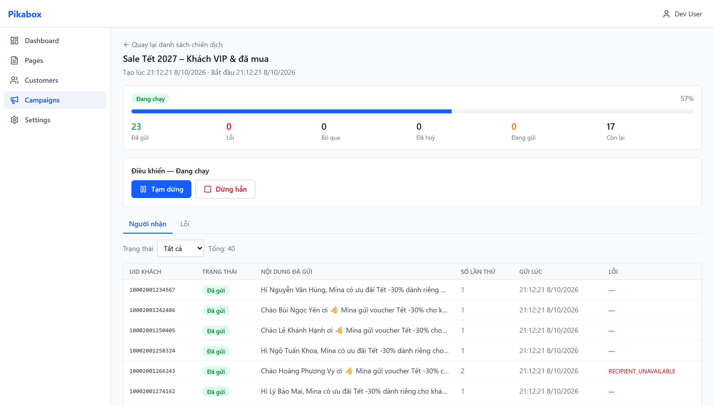
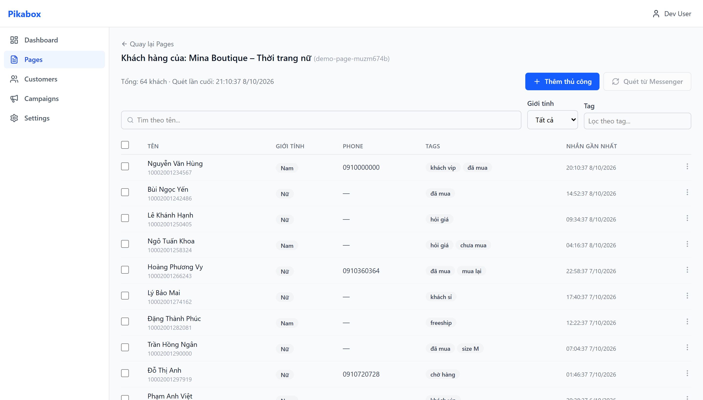
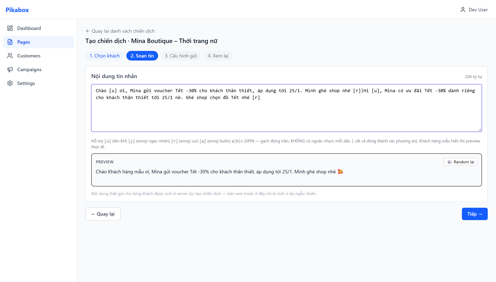
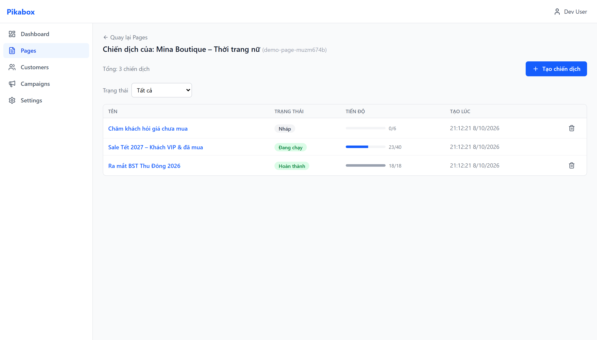

PikaBox scans your Facebook page inbox into a tagged customer list, then sends paced, deduplicated Messenger campaigns to past customers, with account safety built in.
PikaBox quét hộp thư fanpage thành danh sách khách có nhãn, rồi gửi chiến dịch Messenger tới khách cũ theo nhịp an toàn, không trùng, có cơ chế bảo vệ tài khoản.

Everything below ships today. No chatbot flows, no inbound support tooling. Just outbound re-engagement done carefully.
Toàn bộ bên dưới đang chạy thật. Không chatbot, không CSKH inbound. Chỉ tập trung gửi tin chăm khách cũ một cách cẩn thận.
Scan a page inbox once and get a searchable customer list with every Facebook label, gender, phone and last-message date. Junk threads are filtered automatically.
Quét hộp thư một lần, có ngay danh sách khách tìm kiếm được kèm đủ nhãn Facebook, giới tính, SĐT, ngày nhắn gần nhất. Tự loại thread rác.
Pick customers by label or gender, write one message with variants and the customer's name, set send order and pacing, review and launch.
Chọn khách theo nhãn/giới tính, soạn một tin có biến thể và tên khách, chọn thứ tự và nhịp gửi, xem lại rồi chạy.
Each message carries a stable ID, so a retry never sends twice. Skip anyone you already messaged in the last N days.
Mỗi tin có mã ổn định nên retry không gửi đôi. Bỏ qua khách vừa được gửi trong N ngày gần đây.
Watch sent, queued and failed counts update live. Pause, resume or stop at any moment; the sender obeys within seconds.
Theo dõi đã gửi / chờ / lỗi theo thời gian thực. Tạm dừng, chạy tiếp hoặc dừng hẳn bất cứ lúc nào, máy gửi nghe lệnh trong vài giây.
If failures spike, sending for that account stops on its own, probes carefully and resumes only when it is safe. A hard block pauses instantly.
Lỗi tăng đột biến thì tự ngắt gửi cho tài khoản đó, thăm dò cẩn thận và chỉ chạy lại khi an toàn. Bị chặn cứng thì dừng ngay lập tức.
Run Chrome on several machines. The server hands out work so nothing is sent twice and reclaims work from a device that goes offline.
Chạy Chrome trên nhiều máy. Server chia việc nên không trùng, máy mất kết nối thì việc được thu hồi tự động.
The extension reads your page inbox page by page and upserts each person into PikaBox. Nothing is lost on a re-scan; existing customers are updated, not duplicated.
Extension đọc hộp thư page theo từng trang và cập nhật từng người vào PikaBox. Quét lại không mất gì, khách cũ được cập nhật chứ không nhân đôi.

Insert the customer's name with [u], add a random friendly emoji with [r], and separate alternative versions with a pipe. The preview shows exactly what one customer will receive.
Chèn tên khách bằng [u], thêm emoji vui ngẫu nhiên bằng [r], ngăn các phương án nội dung bằng dấu gạch đứng. Preview hiện đúng nội dung một khách sẽ nhận.

Progress, per-recipient status, attempt count and the exact text each person received, all in one screen. Pause, resume or stop with one click.
Tiến độ, trạng thái từng người nhận, số lần thử và đúng nội dung mỗi người đã nhận, tất cả trên một màn hình. Tạm dừng, chạy tiếp hoặc dừng hẳn bằng một cú bấm.

A web dashboard to give orders, a backend that owns every campaign and message, and a Chrome extension that does the sending on your own browser session.
Dashboard web để ra lệnh, backend giữ toàn bộ chiến dịch và tin nhắn, extension Chrome thực hiện gửi ngay trên phiên đăng nhập của bạn.
Add PikaBox to Chrome, open the dashboard, connect the Facebook account you already use and pick the pages you manage.
Thêm PikaBox vào Chrome, mở dashboard, kết nối tài khoản Facebook đang dùng và chọn các page bạn quản lý.
Scan the inbox once. Filter customers by label, gender or name and pick who should hear from you.
Quét inbox một lần. Lọc khách theo nhãn, giới tính hoặc tên và chọn ai sẽ nhận tin.
Create the campaign and keep Chrome open. The extension pulls one message at a time from the server, sends it, and reports back.
Tạo chiến dịch và giữ Chrome mở. Extension lấy từng tin từ server, gửi, rồi báo kết quả về.
NestJSPostgreSQLReactChrome MV3
Work is handed out with short leases and reclaimed if a device disappears. 182 backend end-to-end tests run against a real database, plus a real-browser test harness.
Việc được giao theo lease ngắn và thu hồi nếu máy biến mất. 182 test end-to-end backend chạy trên database thật, cộng bộ test trình duyệt thật.
Bulk messaging tools get accounts restricted by pushing too hard. PikaBox paces every campaign and watches the error rate of each account continuously.
Tool gửi hàng loạt làm tài khoản bị hạn chế vì đẩy quá tay. PikaBox giữ nhịp mọi chiến dịch và theo dõi tỷ lệ lỗi của từng tài khoản liên tục.
Billed monthly in VND. Cancel any time.
Thanh toán theo tháng bằng VND. Hủy bất cứ lúc nào.
For one shop that wants to re-engage its inbox properly.
Cho một shop muốn chăm lại inbox một cách tử tế.
Claude-powered helpers on top of Starter.
Trợ lý AI chạy trên nền Claude, bổ sung cho Starter.
Google Chrome with the PikaBox extension, a Facebook account that administers the pages, and a PikaBox account. Chrome needs to stay open while a campaign is sending.
Google Chrome có cài extension PikaBox, một tài khoản Facebook đang quản trị các page, và một tài khoản PikaBox. Chrome cần mở trong lúc chiến dịch đang gửi.
No tool can promise that. What PikaBox does is pace every campaign, skip people you contacted recently, and pause an account automatically when its error rate climbs, so problems are caught early instead of after thousands of messages.
Không tool nào hứa được điều đó. PikaBox giữ nhịp gửi, bỏ qua khách vừa được liên hệ, và tự tạm dừng tài khoản khi tỷ lệ lỗi tăng, để vấn đề được bắt sớm thay vì sau hàng nghìn tin.
A campaign can target up to 50,000 recipients. Speed is governed by the pacing you set and by the account's health, not by a PikaBox quota.
Một chiến dịch nhắm tối đa 50.000 người nhận. Tốc độ phụ thuộc nhịp gửi bạn đặt và sức khỏe tài khoản, không bị PikaBox giới hạn số lượng.
Yes. Each Chrome with the extension registers as a sender. The server hands out one message at a time with a short lease, so two machines never send the same message, and work from a machine that goes offline is reclaimed.
Được. Mỗi Chrome có extension đăng ký thành một máy gửi. Server giao từng tin một với lease ngắn, hai máy không bao giờ gửi cùng một tin, máy mất kết nối thì việc được thu hồi.
Customer lists and campaigns live in PikaBox's database, scoped to your account. Your Facebook password is never seen by PikaBox; the extension works from the session already open in your browser.
Danh sách khách và chiến dịch nằm trong database của PikaBox, tách riêng theo tài khoản của bạn. PikaBox không bao giờ thấy mật khẩu Facebook, extension làm việc trên phiên đăng nhập sẵn có trong trình duyệt.
Early access is open for a small number of shops. Tell us about your page and we will set you up.
Đang mở dùng sớm cho một số shop. Cho chúng tôi biết về page của bạn, chúng tôi sẽ cài đặt giúp.